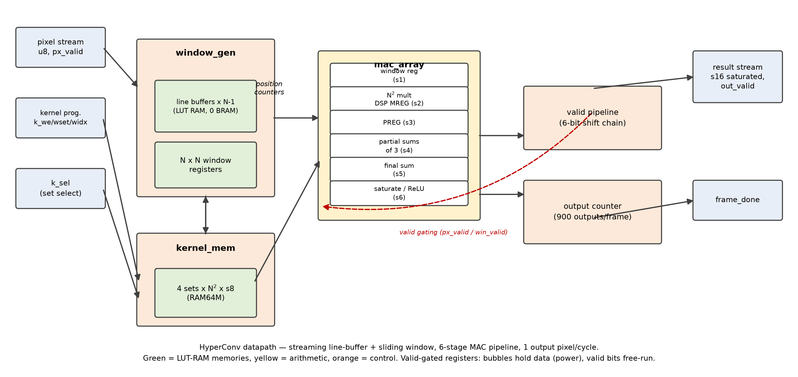
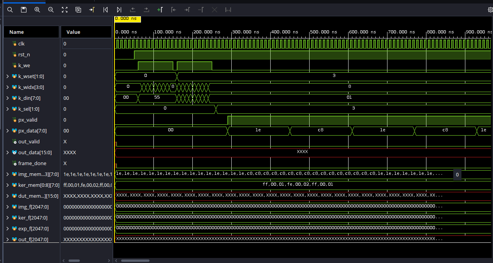
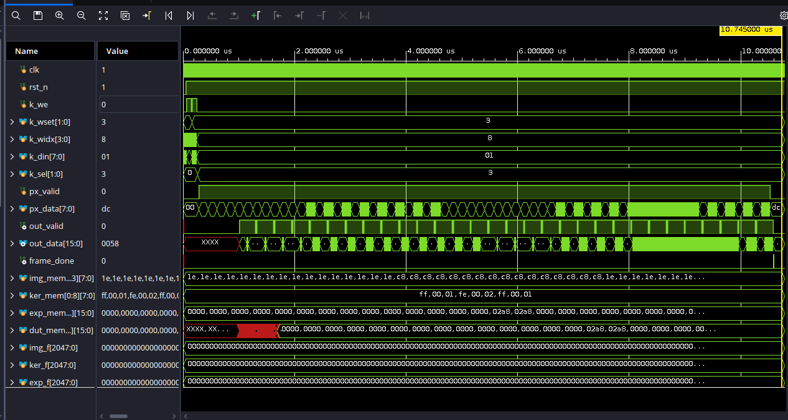
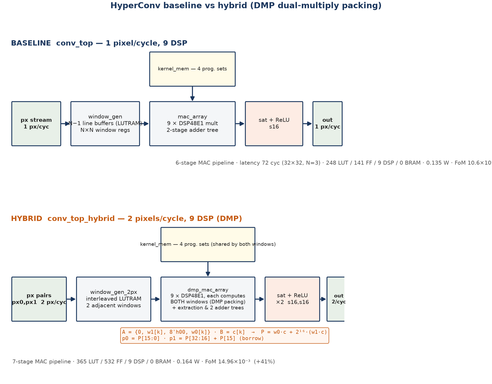

| Requirement | Spec | HyperConv |
|---|---|---|
| Input image | ≥ 32×32 grayscale | parameterizable, default 32×32 |
| Input precision | fixed-point unsigned (justify) | UQ8.0 — native grayscale range |
| Kernel | N×N, programmable, stride 1 | N parameter (3,5 verified), runtime write port, 4 sets |
| Kernel precision | 8-bit signed | SQ8.0 |
| Output precision | ≥ 16-bit signed, overflow policy | SQ16.0 saturated; 20-bit full-precision accumulator → no intermediate overflow |
| ReLU (bonus) | optional | parameter RELU=1: negatives → 0, +7 LUTs, 0 latency |
| Verification | golden model, multiple cases | Python + MATLAB golden, 11/11 bit-exact |

u8 × s8 → s16 product (−32640…+32385)
3 products → 18 b partial · 3 partials → 20 b accumulator
only the final saturate to s16 loses range — by design

sobel_x @ 100 MHz: first pixel → first result = 72 cycles
conv_golden.py (numpy) — generates vectorsconv_golden.m (MATLAB/Octave) — recomputes
1 px/cycle streaming; frame_done on the last of 900 outputs
| Variant | px/cyc | LUT/FF/DSP | Fmax | Power (dyn) | FoM |
|---|---|---|---|---|---|
| Baseline (1-px) | 1 | 248 / 141 / 9 | 219 MHz | 0.135 W (32 mW) | 10.60×10⁻³ |
| Hybrid DMP (chosen) | 2 | 365 / 532 / 9 | 222 MHz | 0.164 W (60 mW) | 14.96×10⁻³ |
| LUT mult (comparison) | 1 | 858 / 562 / 0 | 168 MHz ✗ | 0.152 W (48 mW) | 7.67×10⁻³ |
FoM = Throughput / (Power × (LUTs + 50·DSPs + 100·BRAMs)) — the hybrid doubles throughput on the same 9 DSPs: +41% FoM; timing, hold and methodology all clean.

P = w0·c + 2¹⁶·(w1·c); one-bit borrow correction on extraction.| Bonus | Implementation | Status |
|---|---|---|
| Board demonstration | Standalone self-test bitstream on PYNQ-Z2: on-chip comparison, LED verdict (pass/fail/done/heartbeat) | ✔ built, timing met |
| ≥ 1 output px / cycle | Fully pipelined + DMP dual-multiply packing | ✔ 2 px/cycle |
| Multiple kernels | 4 runtime-programmable kernel sets, registered select | ✔ |
| ReLU activation | Final-stage clamp, +7 LUTs, zero latency cost | ✔ 2 dedicated testcases |
| Edge-detection demo | Sobel X/Y on synthetic scene, golden-checked PNGs | ✔ |
RTL (5 baseline + 3 hybrid modules + selftest) · self-checking TBs (baseline + hybrid) · Python + MATLAB golden models · 11 testcase vector sets with expected outputs · post-route utilization/timing/power/methodology reports for both cores · routed checkpoints · board bitstream · DMP proof experiment · this report + slides.